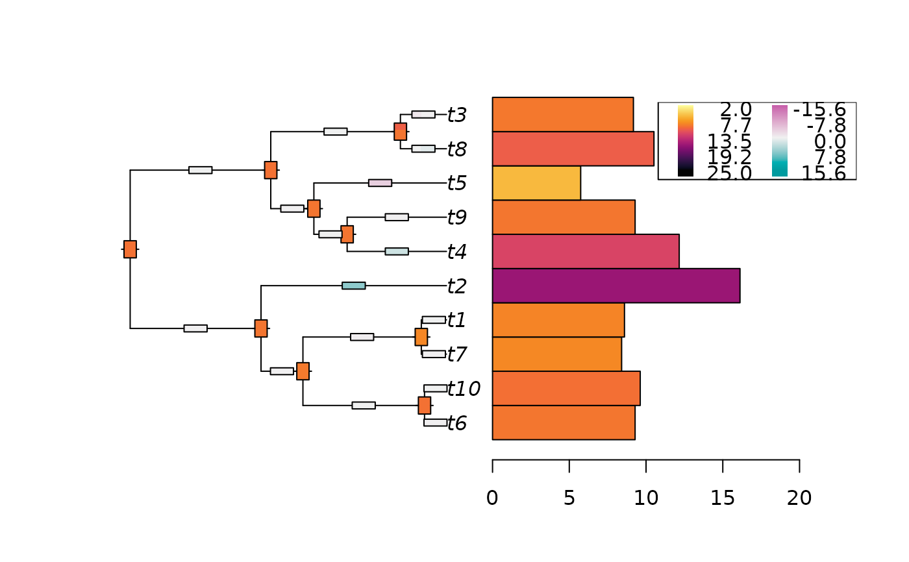

Plot the ancestral states reconstructions from a fitted Cauchy model.
plot_asr(
x,
anc = NULL,
inc = NULL,
common_colorscale = FALSE,
x.legend = "topleft",
y.legend = NULL,
adj = c(0.5, 0.5),
piecol = NULL,
width.node = NULL,
height.node = NULL,
width.edge = NULL,
height.edge = NULL,
style = "bars",
offset = 1,
scaling = 1,
x.lim = NULL,
x.intersp = NULL,
...
)(optional) an object of class ancestralCauchy, obtained with ancestral.
(optional) an object of class ancestralCauchy, obtained with increment.
If both plotted, should the ancestral states and the increment be represented by the same color scale ? Default to FALSE.
the x and y co-ordinates to be used to position the legend. They can be specified by keyword or in any way which is accepted by legend.
one or two numeric values specifying the horizontal and vertical, respectively, justification of the text or symbols. By default, the text is centered horizontally and vertically. If a single value is given, this alters only the horizontal position of the text.
a list of colours (given as a character vector) to be
used by thermo or pie; if left NULL, a series
of colours given by the function rainbow is used.
parameters controlling the aspect of thermometers for the nodes and the edges; by default, their width and height are determined automatically.
a character string specifying the type of graphics; can be abbreviated (see details).
offset of the tip labels (can be negative).
the scaling factor to apply to the data.
a numeric vector of length one or two giving the limit(s)
of the x-axis. If NULL, this is computed with respect to
various parameters such as the string lengths of the labels and the
branch lengths. If a single value is given, this is taken as the
upper limit.
character interspacing factor for horizontal (x) spacing between symbol and legend text (see legend).
other parameters to be passed on to plot.phylo or phydataplot.
None.
The main plot is done with plot.phylo,
the node annotation use nodelabels, and the
tip data plot use phydataplot.
Please refer to these functions for the details of the parameters.
The width of each color in the thermo plots approximately represents the
weight of each node of the distribution, that is estimated by numerically
integrating the density function around each mode.
Function findpeaks is first used to find the modes and
estimate their starting and ending points.
Then function trapz estimates the integral of the density
around the mode.
For an exact representation of a node posterior density, please plot it separately,
using function plot.ancestralCauchy.
set.seed(1289)
# Simulate tree and data
phy <- ape::rphylo(10, 0.1, 0)
dat <- rTraitCauchy(n = 1, phy = phy, model = "cauchy",
parameters = list(root.value = 10, disp = 0.1))
# Fit the data
fit <- fitCauchy(phy, dat, model = "cauchy", method = "reml")
# Reconstruct the ancestral states and increments
inc <- increment(fit, n_values = 100)
anc <- ancestral(fit, n_values = 100)
plot_asr(fit, inc = inc, anc = anc, offset = 3,
width.node = 0.8, height.node = 0.5,
width.edge = 1.5, height.edge = 0.2,
x.legend = "topright")
